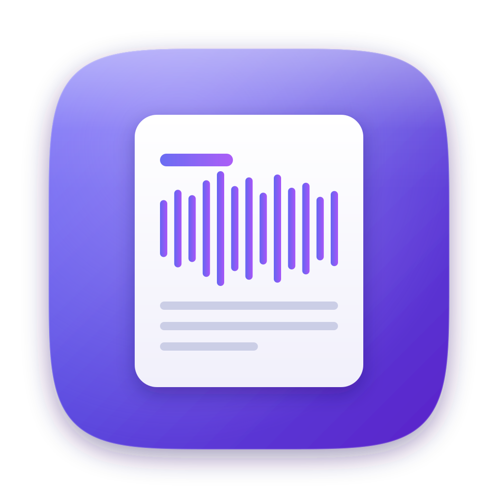

Private meeting notes for your Mac. Hit record, and get a full transcript and clear minutes - all on your own machine.
Protokoll installs with Homebrew on macOS 14+ (Apple Silicon).
Update later with brew upgrade --cask protokoll. Protokoll isn't notarized yet, so if macOS blocks the first launch you can instead run brew install --cask --no-quarantine protokoll.
A few one-time steps so Protokoll can record and process your meetings:
--no-quarantine install above).claude login - no API key needed.ffmpeg and a local Whisper engine) with one click.Capture your mic and the call audio together, so the whole conversation is covered.
Whisper turns the audio into a timestamped transcript, right on your Mac.
Get tidy minutes - decisions, action items with owners, and open questions.
Your recordings and notes are just files in a folder you own - Protokoll never hides them in a database.
claude CLI, signed in (claude login).ffmpeg and a Whisper engine - the app's Diagnostics panel installs these for you.Protokoll isn't notarized yet. Open System Settings → Privacy & Security and click Open Anyway, or reinstall with brew install --cask --no-quarantine protokoll.
Open the app's Diagnostics panel and run the checks - it installs ffmpeg and a Whisper engine and fixes the tool path for you. The end-to-end System-Test confirms everything works.
The app is localized in English and German, and Whisper transcribes many spoken languages. Pick your transcription language in Settings.
Everything lives as plain files in your Protokoll container folder - audio, the transcript, and the summary. They're the source of truth, so you can read, back up, or move them like any other files.